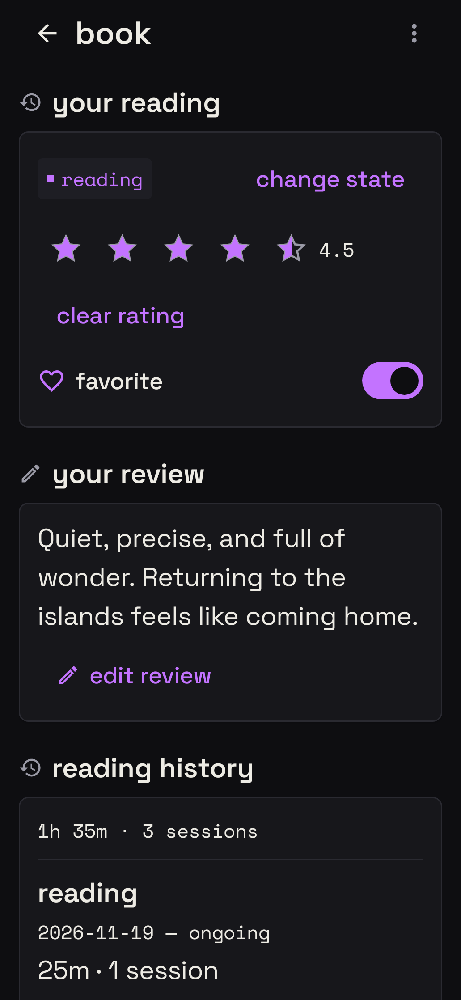
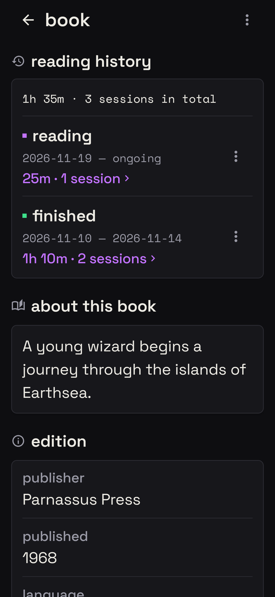
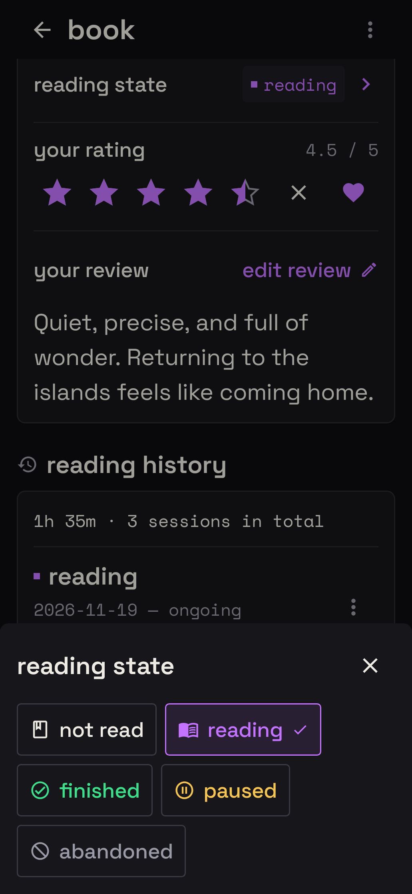
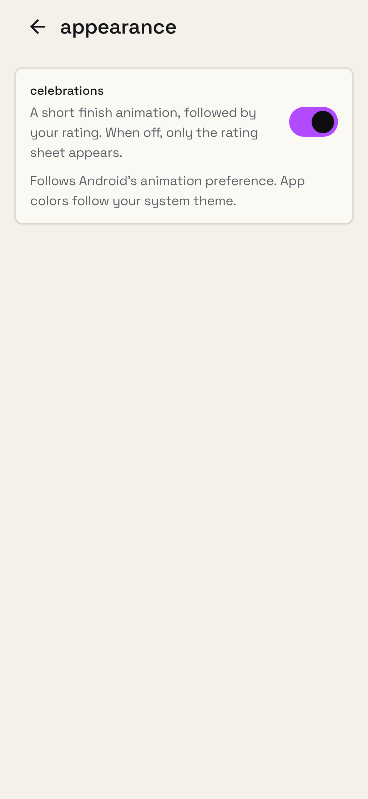
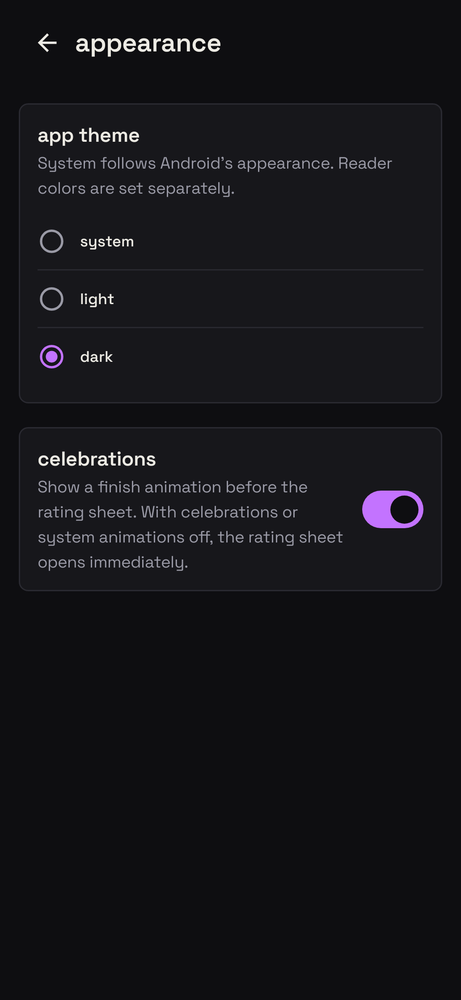
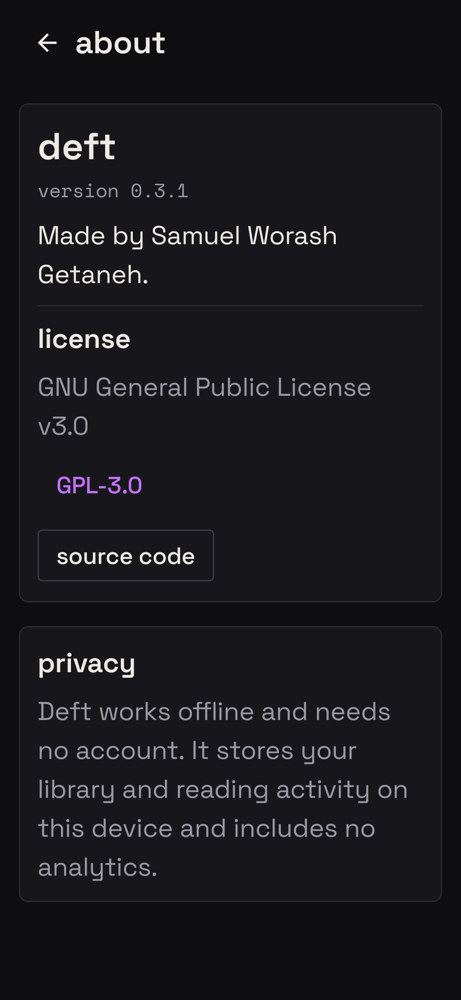
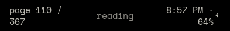
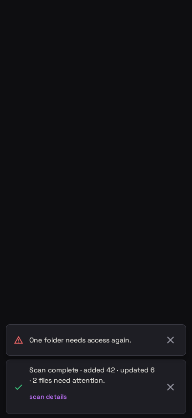
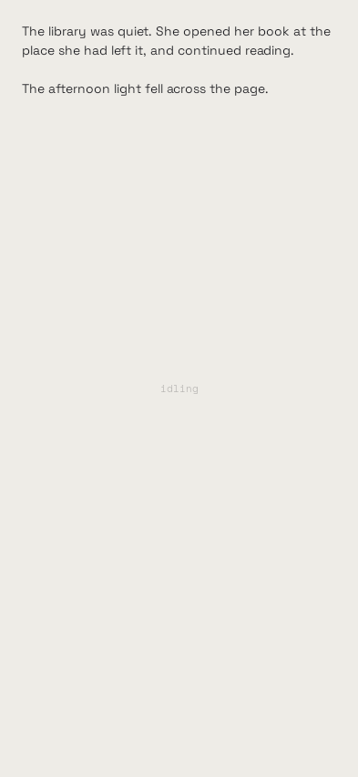

Deft 0.3.2
Reading history, assessments, tracking preferences and the finished-book flow. These are local Compose renders, not phone screenshots. Timing, gestures and haptics are covered by the M3 device checklist.
Accepted M2 visual reference
Book history and assessment
 Grouped state, rating, favorite, private review and read-through history.
Grouped state, rating, favorite, private review and read-through history.

Compact half-star control with aligned clear/heart actions and integrated review at large text.
 Separate attempts with dates, recorded sessions and focused history actions.
Separate attempts with dates, recorded sessions and focused history actions.

History management uses a dated menu. Browsing sessions remain accessible but are excluded from totals.

Content-sized state choices wrap with semantic colors, icons and a clear selected marker.
Tracking preferences
 Tracking and Appearance join the existing settings categories.
Tracking and Appearance join the existing settings categories.
 Separate idle controls for reflowable and fixed-layout books, plus the optional tracking indicator. Apply sits beside each numeric field. Fixed-layout readers arrive in M8 under the current roadmap.
Separate idle controls for reflowable and fixed-layout books, plus the optional tracking indicator. Apply sits beside each numeric field. Fixed-layout readers arrive in M8 under the current roadmap.

App theme is independent of the reader; celebrations retain their own switch.

Light, Dark or System, with a visible off-state thumb.

Linked kmab attribution, grouped source/license actions, version and offline privacy.
Finished-book flow
 One frame of the short finish animation. The final composition holds until tap or close.
Quiet mode uses the rating sheet directly; it also follows Android's disabled-animation setting.
One frame of the short finish animation. The final composition holds until tap or close.
Quiet mode uses the rating sheet directly; it also follows Android's disabled-animation setting.
Reader status and notices

Page left, tracking centered, clock/battery and charging indicator right. Side labels wrap within their columns at large text.

Message, icon and dismiss are vertically centered; scan details stays with its message.

Very faint idle film and pulsing label; the first whole touch gesture resumes without changing pages.